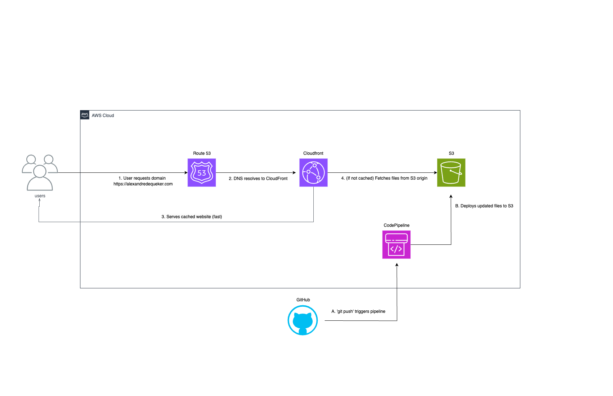

Project 1: Building a Secure, Serverless Portfolio on AWS
How I used S3, CloudFront, and a CI/CD pipeline to deploy a professional website for under $1/month.
The Goal
My primary goal was to create a fast, secure, and globally available portfolio website to showcase my cloud projects. Key requirements included using my own custom domain with HTTPS, keeping costs to an absolute minimum, and automating the deployment process so I could update the site easily.
The Architecture
I designed a fully serverless architecture using core AWS services. This approach is highly scalable, resilient, and incredibly cost-effective.
The key components are:
- Amazon S3: Used for durable, scalable object storage to host the static HTML, CSS, and image files.
- Amazon CloudFront: Acts as the Content Delivery Network (CDN) to cache content globally for low-latency delivery and provides security with HTTPS.
- AWS Certificate Manager (ACM): Provides the free SSL/TLS certificate for HTTPS.
- Amazon Route 53: Manages the DNS for my custom domain, directing users to the CloudFront distribution.
- AWS CodePipeline: Automates the CI/CD workflow, deploying any changes from my GitHub repository directly to S3.
Challenges & Lessons Learned
The most significant challenge was a persistent caching issue after the CI/CD pipeline was built. Even after the pipeline reported a successful deployment of new code to S3, the live website was not showing the latest updates. By systematically debugging each stage, I proved the code on GitHub and the object in S3 were both correct. This isolated the problem to CloudFront's cache. The solution was to create a CloudFront invalidation for `/*`, which successfully forced all edge locations to fetch the new content. This was a valuable real-world lesson in how CDNs operate.